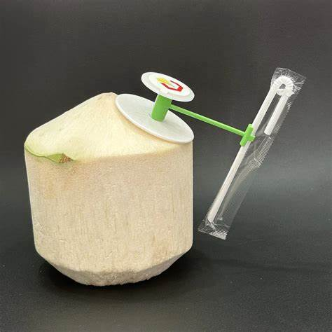
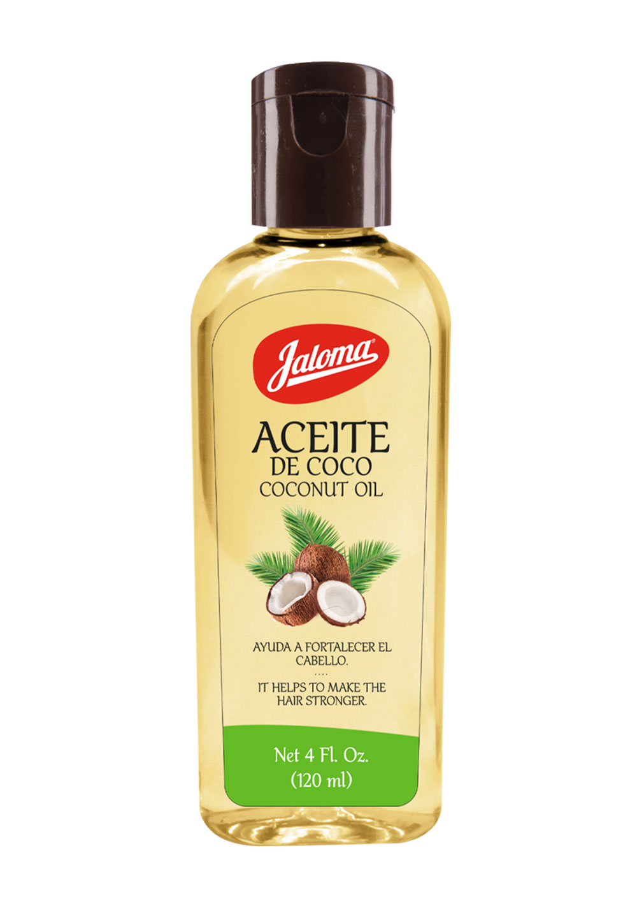
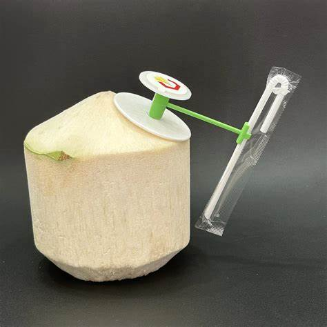
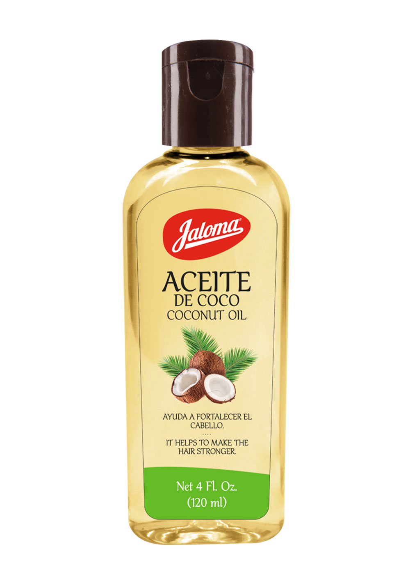
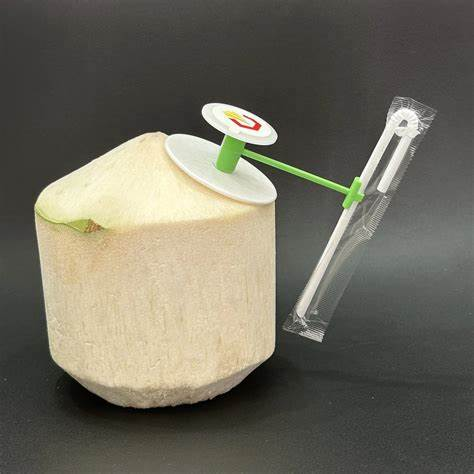
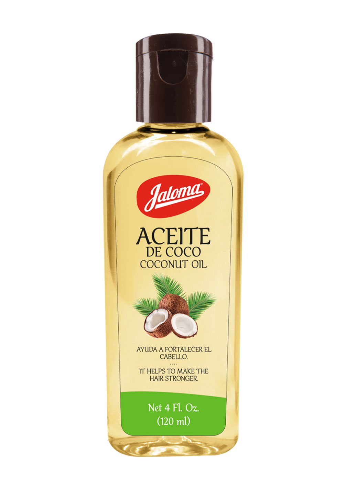
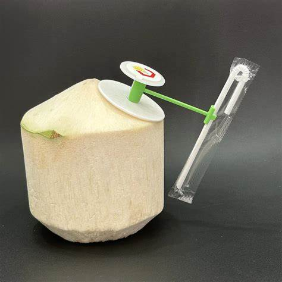
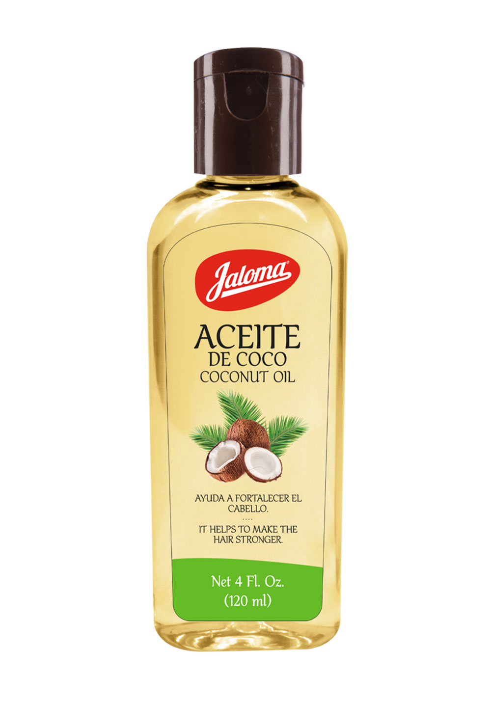

Proveer productos derivados del coco de la más alta calidad, comprometidos con el desarrollo sostenible y la satisfacción de nuestros clientes.
Ser líderes en la producción y comercialización de productos derivados del coco en el mercado nacional e internacional, promoviendo la innovación y el cuidado del medio ambiente.
Somos un proyecto que nace con un objetivo principal: ayudar a los productores de coco y dar un realce al rubro, a través de la comercialización de cultivos de la palma de coco, con el fin de modernizar y valorar los beneficios y propiedades de dicho fruto. La idea de nosotros, los estudiantes de la Universidad Pedagógica de El Salvador, es que nuestra marca pueda trascender y ocupar un espacio dentro de la venta, distribución y (por qué no) producción del cultivo de cocos a nivel nacional, garantizando un impulso económico y social que marque un hito en este sector. Contamos con todos los conocimientos técnicos, teóricos y prácticos para ejecutar nuestro proyecto, el cual, al ser implementado, tendrá un alcance nacional y generará cientos de empleos, además de beneficiar a las cooperativas cocoteras del país y a muchas familias, incrementando sus ingresos. Queremos integrar a todos los productores de coco en este esfuerzo, que no solo nos beneficiará como marca productora, sino también a todos los involucrados. Así podremos hacer crecer a nuestra nación, abriendo espacios y oportunidades para los salvadoreños.